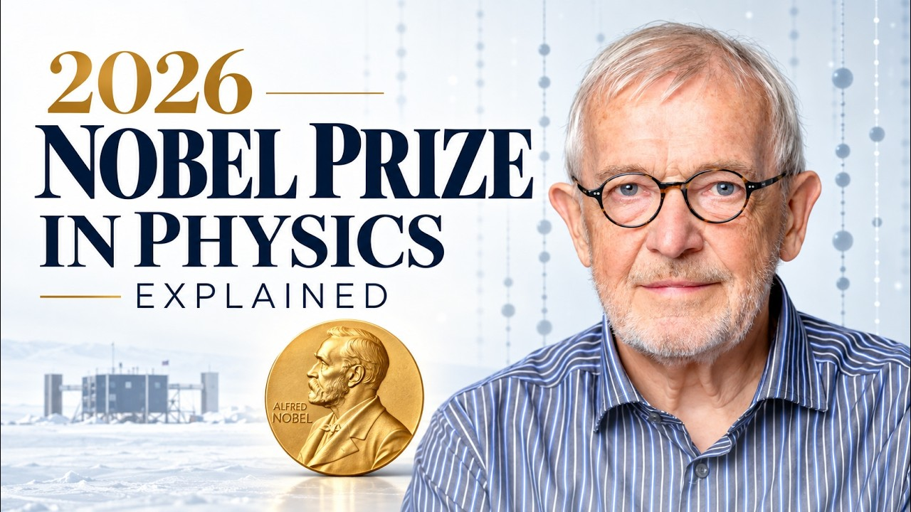
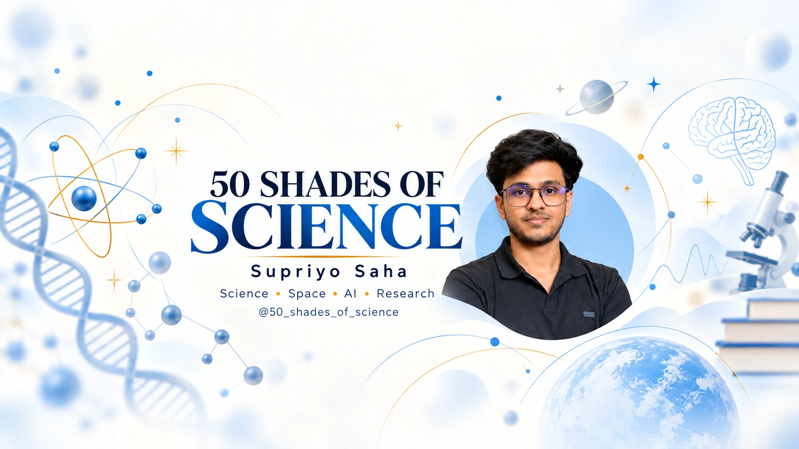
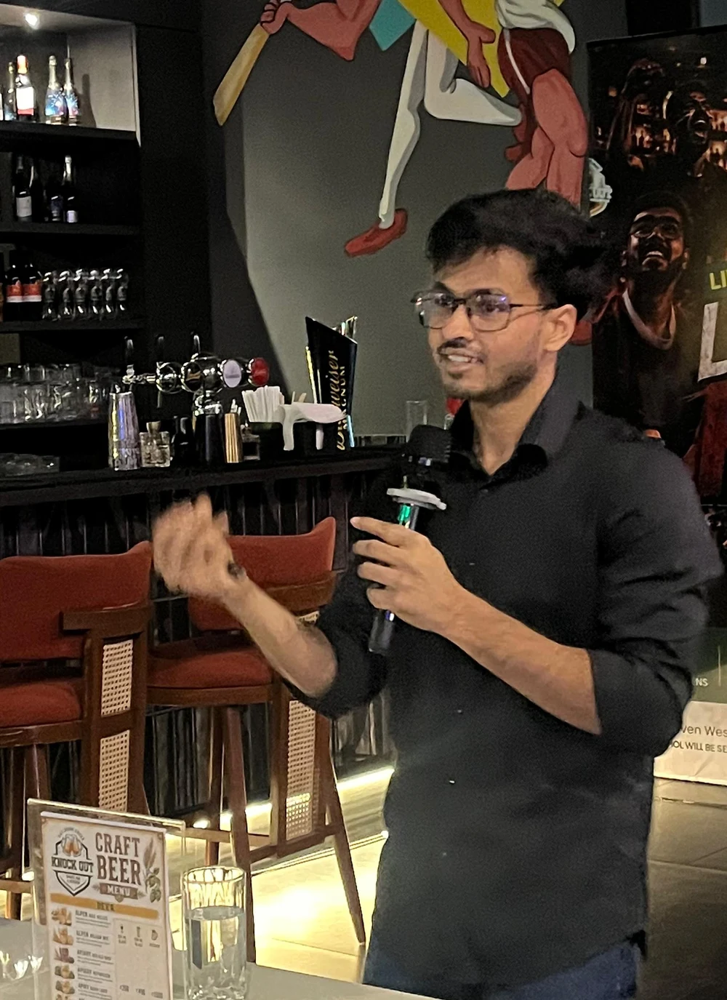
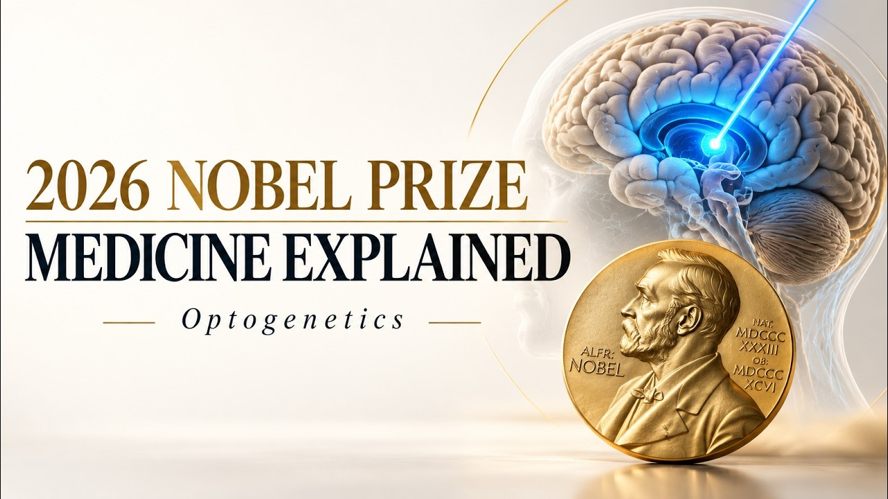
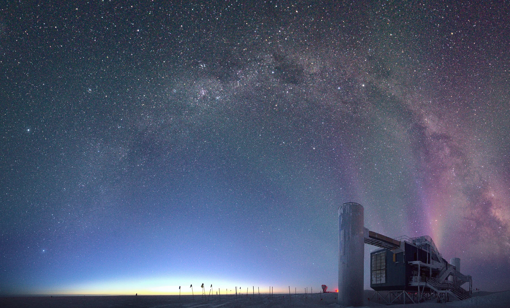
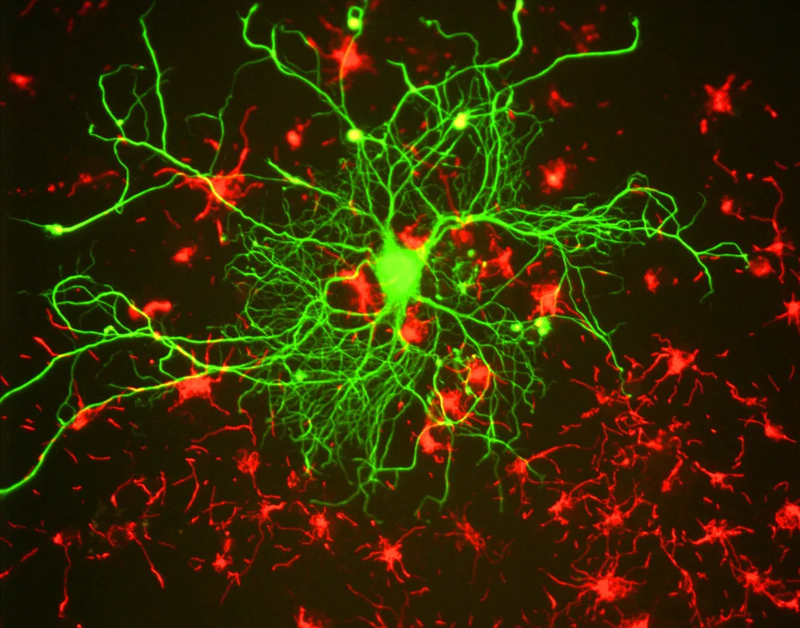

HOW DO YOU CATCH A GHOST PARTICLE?
Inside the Antarctic ice, a tiny flash reveals a messenger from the wider universe.
WATCH ON YOUTUBE ↗
SCIENCE · SPACE · AI · RESEARCH
Films, talks and learning experiences that make science clear, memorable and open to everyone.
ABOUT THE FOUNDER
MORE ABOUT SUPRIYO ↗
Supriyo Saha is a PhD researcher in cosmology at the Tata Institute of Fundamental Research, Mumbai, and the founder of 50 Shades of Science.
His research background shapes the care behind each explanation. The work goes well beyond cosmology: biology, technology and the method of science belong here too.
EXPLORE THE RESEARCH ↗50 Shades of Science is an independent project. The institutional affiliation does not imply TIFR endorsement.01 / THE WORK
SCIENCE IS NOT A SINGLE SUBJECT.
From the early universe to living cells, the subject changes. The approach stays the same: start with wonder, follow the evidence, and leave room for the next question.
02 / FILMS & EXPLAINERS
OPEN FILM LIBRARY ↗
Inside the Antarctic ice, a tiny flash reveals a messenger from the wider universe.
WATCH ON YOUTUBE ↗
How light-sensitive tools let researchers investigate the living neural circuits.
WATCH ON YOUTUBE ↗
A cubic kilometre of South Pole ice instrumented to detect high-energy cosmic neutrinos.
FILM DETAILS ↗
Probing living brain circuits with genetically targeted light-sensitive channelrhodopsins.
FILM DETAILS ↗03 / WAYS TO WORK TOGETHER
FOR SCHOOLS, EVENTS & PARTNERS
A good science experience changes the questions people ask after they leave.

04 / IN THE ROOM
Science communication is a conversation. The room, the audience and their questions shape the way we tell each story.
INVITE US TO YOUR EVENT ↗ACTUAL PUBLIC SCIENCE TALK05 / FOR SCHOOLS
PROGRAMME DETAILS ↗Visual talks and interactive workshops help students connect a bold idea to the observation behind it. Sessions are shaped with each school for its students, topics and timetable.
PLAN A SCHOOL SESSION ↗06 / PARTNERSHIPS
CSR APPROACH ↗Schools, organisations and CSR teams can help build science engagement that reaches students and learns from the result.
We can design an illustrative pilot together, with clear goals, participation measures and honest reporting.
DISCUSS A PARTNERSHIP ↗07 / START A CONVERSATION
MUMBAI · INDIA
Tell us the audience, the place and the idea. We’ll work out the right format together.
fiftyshadesofscience1@gmail.com ↗The form prepares an email in your mail app. Review and send it there; this website stores nothing.